All experiments were run on two machines: my laptop and the university course server. The same code, inputs and settings were used on both.
| Laptop | University server (parcomp2026) | |
|---|---|---|
| CPU | Intel Core Ultra 7 265U, hybrid: 2 performance + 8 efficient + 2 low-power efficient cores (14 threads), 15 W class laptop chip | AMD EPYC 7742, virtual machine with 64 identical vCPUs (lscpu: 64 sockets x 1 core x 1 thread, 1 NUMA node) |
| Cores used | $P = 1, 2, 4$ (WSL shows 7 cores x 2 threads; $P = 8$ would need oversubscription) | $P = 1, 2, 4, 8, 16, 32, 64$ |
| Memory | 31 GiB (27 GiB available), 8 GiB swap | 62 GiB (58 GiB available), no swap |
| OS | Ubuntu under WSL 2 on Windows 11 | Linux VM, idle during the runs (load average 0.07) |
| MPI | Open MPI v5.0.10 (Debian) | Open MPI v4.1.2 (Debian), started with --bind-to core |
| Python / BLAS | Python 3.14.4, NumPy with OpenBLAS 0.3.34 (scipy-openblas, AVX2) | Python 3.10.12, NumPy with ILP64 OpenBLAS (openblas64_) |
| Sizes, repetitions | $N = 512, 1024, 2048$, 10 timed runs | $N = 512, 1024, 2048, 4096$ with 5 runs, $N = 8192$ ($P = 1, 4, 16, 64$, two methods) with 3 runs |
OMP_NUM_THREADS=1, OPENBLAS_NUM_THREADS=1, MKL_NUM_THREADS=1, so each MPI rank uses exactly one BLAS thread. All data is np.float64.Gather of $C$ on rank 0. The one-time distribution of $A$ (row blocks) and $B$ (column blocks, scattered as rows of $B^T$) is measured separately as setup and is not included in the times, speedups or GFLOP/s.comm.Barrier() and MPI.Wtime() at the start, every rank measures its own elapsed time, and the maximum over all ranks is taken with comm.reduce(..., op=MPI.MAX, root=0). For every method and $N$ the first call is a warm-up (also checked against A @ B) and is not recorded. Tables report the median and the min..max range.A @ B through the same code path.results.csv and the series was repeated; only the repeated one is used.Run commands:
export OMP_NUM_THREADS=1 OPENBLAS_NUM_THREADS=1 MKL_NUM_THREADS=1
mpiexec -n <P> python3 a7_test.py
# laptop
mpiexec -n <P> python3 task7_3.py --N 512 1024 2048 --runs 10 --methods blocking,nonblocking,circulate_A
python3 -c "import task7_3_plot; task7_3_plot.main()"
# server
for P in 1 2 4 8 16 32 64; do mpiexec --bind-to core -n $P python3 task7_3.py --N 512 1024 2048 4096 --runs 5 --methods blocking,nonblocking,circulate_A --csv results_server.csv; done
for P in 1 4 16 64; do mpiexec --bind-to core -n $P python3 task7_3.py --N 8192 --runs 3 --methods blocking,nonblocking --csv results_server.csv; done
python3 -c "import sys, task7_3_plot as t; sys.argv=['x','--csv','results_server.csv','--out','plots_server']; t.main()"
# comparison of both machines
python3 -c "import task7_3_plot as t; t.compare_machines()"task7_1.py, ring_matrix_multiplication)float64 buffers.C_local of shape $n \times N$: the complete row block $p$ of $C$.C_local.comm.Sendrecv. Two buffers are used and swapped, so the caller's B_colbl is never overwritten.comm.Gather stacks the $P$ row blocks into the $N \times N$ matrix $C$ on rank 0 (row blocks are contiguous, so no reordering is needed). Other ranks return None.ring_matrix_multiplier, so this name is provided as an alias.The trace for $P = 5$ from the assignment follows directly from $q = (p - s) \bmod P$: in step 0 every rank computes its diagonal block $C_{p,p}$, in step 1 rank 0 computes $C_{0,4}$, rank 1 $C_{1,0}$ and so on, and after 5 steps every rank has visited all 5 column blocks exactly once.
a7_test.py)All ranks generate the same full matrices from a fixed seed and take their own blocks. Rank 0 compares the result with A @ B using np.testing.assert_allclose(rtol=1e-10, atol=1e-12). Cases: $N = P$ (one row per rank), identity times random, random times identity, zero times random, a matrix of known integers times its transpose, the random $n = 3$ case of the course test, a dense $64P \times 64P$ case and, for $P = 1$, a $2 \times 2$ example checked by hand. Every test also checks that the input block was not modified. The same cases run for all square implementations; four non-square cases are added for Bonus B. The tests were run on the laptop ($P = 1, 2, 4$) and on the server ($P = 1, 2, 3, 4, 8, 16$; $P = 3$ checks a ring with an odd number of ranks).
Raw Terminal Output, laptop (P = 4 in full):
user@DESKTOP-AJAG7QD:/mnt/c/учёба/study/1_semester/parallel/hw7$ mpiexec -n 1 python3 a7_test.py
P = 1
...
passed 36, failed 0
user@DESKTOP-AJAG7QD:/mnt/c/учёба/study/1_semester/parallel/hw7$ mpiexec -n 2 python3 a7_test.py
P = 2
...
passed 32, failed 0
user@DESKTOP-AJAG7QD:/mnt/c/учёба/study/1_semester/parallel/hw7$ mpiexec -n 4 python3 a7_test.py
P = 4
[PASS] blocking (7.1) N=P random
[PASS] nonblocking (7.2) N=P random
[PASS] circulate A (bonus A) N=P random
[PASS] rectangular (bonus B) N=P random
7.2a blocking vs nonblocking: bitwise identical
[PASS] blocking (7.1) identity x random
[PASS] nonblocking (7.2) identity x random
[PASS] circulate A (bonus A) identity x random
[PASS] rectangular (bonus B) identity x random
7.2a blocking vs nonblocking: bitwise identical
[PASS] blocking (7.1) random x identity
[PASS] nonblocking (7.2) random x identity
[PASS] circulate A (bonus A) random x identity
[PASS] rectangular (bonus B) random x identity
7.2a blocking vs nonblocking: bitwise identical
[PASS] blocking (7.1) zero x random
[PASS] nonblocking (7.2) zero x random
[PASS] circulate A (bonus A) zero x random
[PASS] rectangular (bonus B) zero x random
7.2a blocking vs nonblocking: bitwise identical
[PASS] blocking (7.1) known integers
[PASS] nonblocking (7.2) known integers
[PASS] circulate A (bonus A) known integers
[PASS] rectangular (bonus B) known integers
7.2a blocking vs nonblocking: bitwise identical
[PASS] blocking (7.1) course test n=3
[PASS] nonblocking (7.2) course test n=3
[PASS] circulate A (bonus A) course test n=3
[PASS] rectangular (bonus B) course test n=3
7.2a blocking vs nonblocking: bitwise identical
[PASS] blocking (7.1) dense N=64*P
[PASS] nonblocking (7.2) dense N=64*P
[PASS] circulate A (bonus A) dense N=64*P
[PASS] rectangular (bonus B) dense N=64*P
7.2a blocking vs nonblocking: bitwise identical
[PASS] rectangular (bonus B) N=2P, K=3, M=3P
[PASS] rectangular (bonus B) N=P, K=7, M=2P
[PASS] rectangular (bonus B) N=3P, K=1, M=P
[PASS] rectangular (bonus B) N=5P, K=40, M=2P
passed 32, failed 0Raw Terminal Output, server:
nechshadimov@parcomp2026:~/sources/hw7$ for P in 1 2 3 4 8 16; do mpiexec -n $P python3 a7_test.py | tail -1; done
passed 36, failed 0
passed 32, failed 0
passed 32, failed 0
passed 32, failed 0
passed 32, failed 0
passed 32, failed 0
Every block $C_{p,q}$ is computed exactly once, by the rank that owns row block $p$, and it is final at that moment: no later step changes it, and no other rank needs it during the computation (the ring only moves blocks of $B$, never blocks of $C$). The result simply accumulates in C_local, which after $P$ steps holds the complete row block. Gathering after every step would send the same total amount of data, but as $P$ times more, smaller messages with $P$ times the latency, and it would add a collective synchronisation of all ranks to every step, so ranks could no longer proceed at their own pace between the neighbour exchanges.
In the ring every rank sends to its right neighbour and receives from its left neighbour at the same time. With a naive blocking Send followed by Recv, every rank first calls Send. A blocking send may only return when the data has been delivered or buffered; for large messages MPI uses a rendezvous protocol and waits until the receiver has posted the matching Recv. But every rank is still inside its own Send, nobody has reached Recv, and all ranks wait for each other forever. Such code often works for small blocks (they fit into the internal eager buffer) and then hangs once the matrices get larger, which makes the bug dangerous. Sendrecv hands both operations to MPI at once, so the library can progress the send and the receive together and no cyclic wait can occur. The alternatives would be ordering by rank parity (even ranks send first, odd ranks receive first) or nonblocking calls, as in Exercise 7.2.
task7_2.py, ring_matrix_multiplication_nb)B_current = B_colbl.copy() and B_next = np.empty_like(B_current).Irecv into B_next from the left neighbour, post Isend of B_current to the right neighbour, then compute $A_p \cdot$ B_current into the correct columns of C_local, then MPI.Request.Waitall on both requests and swap the buffers.B_current is only read, which is allowed while it is the buffer of a pending Isend; it is not overwritten until the send has completed and the buffers are swapped. B_next is not read before its Irecv has completed. A single in-place buffer would not work here, because the incoming block would overwrite the block that is being multiplied and sent.For every test case and every $P$ the test prints a direct comparison of the blocking and nonblocking results on rank 0: all of them were bitwise identical on both machines. This is expected, because both versions perform exactly the same multiplications in the same order; only the timing of the communication differs.
Server (change of the nonblocking median against the blocking one; negative = nonblocking faster):
| N \ P | 1 | 2 | 4 | 8 | 16 | 32 | 64 |
|---|---|---|---|---|---|---|---|
| 512 | -13% | -11% | -28% | -4% | +3% | -12% | -2% |
| 1024 | -1% | -3% | -4% | -7% | -14% | -3% | -1% |
| 2048 | 0% | -1% | 0% | -4% | -5% | -10% | -10% |
| 4096 | 0% | 0% | 0% | -1% | -4% | -20% | +9% |
| 8192 | 0% | -1% | -1% | +2% |
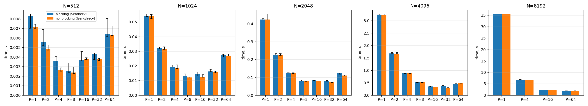
Laptop:
| N \ P | 1 | 2 | 4 |
|---|---|---|---|
| 512 | -16% | -8% | +8% |
| 1024 | -10% | +17% | -16% |
| 2048 | +19% | -10% | +9% |
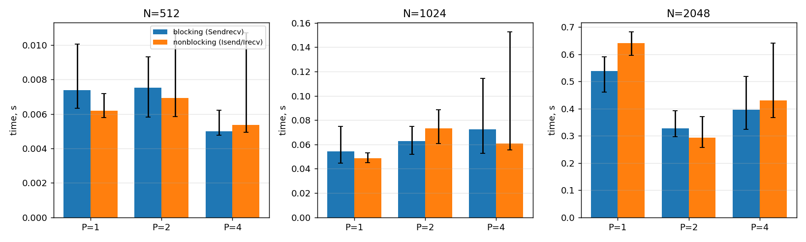
Answer. The $P = 1$ column is the control: with one rank there is no communication, both versions run the same single multiplication, so any difference there is pure measurement noise.
Waitall. In shared memory the transfer is also a CPU copy that competes with the multiplication for memory bandwidth.Raw Terminal Output (server):
nechshadimov@parcomp2026:~/sources/hw7$ for P in 1 2 4 8 16 32 64; do mpiexec --bind-to core -n $P python3 task7_3.py --N 512 1024 2048 4096 --runs 5 --methods blocking,nonblocking,circulate_A --csv results_server.csv; done 2>&1 | tee bench_server.txt
blocking P= 1 N= 512 median 0.0082s (min 0.0070 / max 0.0085, 5 runs) 32.54 GFLOP/s setup 0.0065s
nonblocking P= 1 N= 512 median 0.0071s (min 0.0070 / max 0.0074, 5 runs) 37.75 GFLOP/s setup 0.0065s
circulate_A P= 1 N= 512 median 0.0070s (min 0.0069 / max 0.0072, 5 runs) 38.30 GFLOP/s setup 0.0065s
blocking P= 1 N= 1024 median 0.0544s (min 0.0537 / max 0.0555, 5 runs) 39.51 GFLOP/s setup 0.0230s
nonblocking P= 1 N= 1024 median 0.0539s (min 0.0522 / max 0.0550, 5 runs) 39.83 GFLOP/s setup 0.0230s
circulate_A P= 1 N= 1024 median 0.0540s (min 0.0537 / max 0.0548, 5 runs) 39.75 GFLOP/s setup 0.0230s
blocking P= 1 N= 2048 median 0.4247s (min 0.4205 / max 0.4286, 5 runs) 40.46 GFLOP/s setup 0.4356s
nonblocking P= 1 N= 2048 median 0.4241s (min 0.4222 / max 0.4556, 5 runs) 40.51 GFLOP/s setup 0.4356s
circulate_A P= 1 N= 2048 median 0.4257s (min 0.4223 / max 0.4347, 5 runs) 40.36 GFLOP/s setup 0.4356s
blocking P= 1 N= 4096 median 3.2387s (min 3.2235 / max 3.2693, 5 runs) 42.44 GFLOP/s setup 3.5624s
nonblocking P= 1 N= 4096 median 3.2377s (min 3.2260 / max 3.2694, 5 runs) 42.45 GFLOP/s setup 3.5624s
circulate_A P= 1 N= 4096 median 3.2483s (min 3.2238 / max 3.2889, 5 runs) 42.31 GFLOP/s setup 3.5624s
blocking P= 2 N= 512 median 0.0055s (min 0.0052 / max 0.0069, 5 runs) 48.41 GFLOP/s setup 0.0057s
nonblocking P= 2 N= 512 median 0.0049s (min 0.0047 / max 0.0053, 5 runs) 55.09 GFLOP/s setup 0.0057s
circulate_A P= 2 N= 512 median 0.0049s (min 0.0048 / max 0.0051, 5 runs) 54.70 GFLOP/s setup 0.0057s
blocking P= 2 N= 1024 median 0.0323s (min 0.0314 / max 0.0329, 5 runs) 66.57 GFLOP/s setup 0.0201s
nonblocking P= 2 N= 1024 median 0.0313s (min 0.0312 / max 0.0330, 5 runs) 68.56 GFLOP/s setup 0.0201s
circulate_A P= 2 N= 1024 median 0.0326s (min 0.0316 / max 0.0343, 5 runs) 65.92 GFLOP/s setup 0.0201s
blocking P= 2 N= 2048 median 0.2266s (min 0.2244 / max 0.2326, 5 runs) 75.81 GFLOP/s setup 0.3437s
nonblocking P= 2 N= 2048 median 0.2252s (min 0.2233 / max 0.2334, 5 runs) 76.30 GFLOP/s setup 0.3437s
circulate_A P= 2 N= 2048 median 0.2307s (min 0.2281 / max 0.2390, 5 runs) 74.47 GFLOP/s setup 0.3437s
blocking P= 2 N= 4096 median 1.6764s (min 1.6687 / max 1.7110, 5 runs) 81.98 GFLOP/s setup 2.7140s
nonblocking P= 2 N= 4096 median 1.6740s (min 1.6715 / max 1.7164, 5 runs) 82.10 GFLOP/s setup 2.7140s
circulate_A P= 2 N= 4096 median 1.7248s (min 1.7087 / max 1.7811, 5 runs) 79.69 GFLOP/s setup 2.7140s
blocking P= 4 N= 512 median 0.0036s (min 0.0026 / max 0.0040, 5 runs) 75.30 GFLOP/s setup 0.0046s
nonblocking P= 4 N= 512 median 0.0026s (min 0.0025 / max 0.0029, 5 runs) 102.81 GFLOP/s setup 0.0046s
circulate_A P= 4 N= 512 median 0.0028s (min 0.0027 / max 0.0032, 5 runs) 97.17 GFLOP/s setup 0.0046s
blocking P= 4 N= 1024 median 0.0193s (min 0.0192 / max 0.0206, 5 runs) 111.20 GFLOP/s setup 0.0195s
nonblocking P= 4 N= 1024 median 0.0186s (min 0.0182 / max 0.0208, 5 runs) 115.61 GFLOP/s setup 0.0195s
circulate_A P= 4 N= 1024 median 0.0197s (min 0.0192 / max 0.0202, 5 runs) 109.23 GFLOP/s setup 0.0195s
blocking P= 4 N= 2048 median 0.1239s (min 0.1236 / max 0.1256, 5 runs) 138.65 GFLOP/s setup 0.2286s
nonblocking P= 4 N= 2048 median 0.1238s (min 0.1215 / max 0.1261, 5 runs) 138.73 GFLOP/s setup 0.2286s
circulate_A P= 4 N= 2048 median 0.1324s (min 0.1300 / max 0.1340, 5 runs) 129.77 GFLOP/s setup 0.2286s
blocking P= 4 N= 4096 median 0.8815s (min 0.8714 / max 0.8923, 5 runs) 155.91 GFLOP/s setup 2.5520s
nonblocking P= 4 N= 4096 median 0.8823s (min 0.8785 / max 0.8927, 5 runs) 155.78 GFLOP/s setup 2.5520s
circulate_A P= 4 N= 4096 median 0.9110s (min 0.8993 / max 0.9236, 5 runs) 150.86 GFLOP/s setup 2.5520s
blocking P= 8 N= 512 median 0.0025s (min 0.0024 / max 0.0034, 5 runs) 106.20 GFLOP/s setup 0.0038s
nonblocking P= 8 N= 512 median 0.0024s (min 0.0023 / max 0.0029, 5 runs) 113.22 GFLOP/s setup 0.0038s
circulate_A P= 8 N= 512 median 0.0027s (min 0.0026 / max 0.0029, 5 runs) 100.99 GFLOP/s setup 0.0038s
blocking P= 8 N= 1024 median 0.0130s (min 0.0130 / max 0.0146, 5 runs) 164.99 GFLOP/s setup 0.0170s
nonblocking P= 8 N= 1024 median 0.0121s (min 0.0119 / max 0.0125, 5 runs) 177.71 GFLOP/s setup 0.0170s
circulate_A P= 8 N= 1024 median 0.0134s (min 0.0132 / max 0.0136, 5 runs) 160.24 GFLOP/s setup 0.0170s
blocking P= 8 N= 2048 median 0.0818s (min 0.0792 / max 0.0850, 5 runs) 210.06 GFLOP/s setup 0.3175s
nonblocking P= 8 N= 2048 median 0.0785s (min 0.0774 / max 0.0801, 5 runs) 218.82 GFLOP/s setup 0.3175s
circulate_A P= 8 N= 2048 median 0.0846s (min 0.0839 / max 0.0850, 5 runs) 203.08 GFLOP/s setup 0.3175s
blocking P= 8 N= 4096 median 0.5171s (min 0.5101 / max 0.5262, 5 runs) 265.79 GFLOP/s setup 2.1318s
nonblocking P= 8 N= 4096 median 0.5137s (min 0.5059 / max 0.5185, 5 runs) 267.54 GFLOP/s setup 2.1318s
circulate_A P= 8 N= 4096 median 0.5407s (min 0.5313 / max 0.5416, 5 runs) 254.19 GFLOP/s setup 2.1318s
blocking P= 16 N= 512 median 0.0037s (min 0.0036 / max 0.0046, 5 runs) 72.08 GFLOP/s setup 0.0036s
nonblocking P= 16 N= 512 median 0.0038s (min 0.0037 / max 0.0039, 5 runs) 70.99 GFLOP/s setup 0.0036s
circulate_A P= 16 N= 512 median 0.0038s (min 0.0038 / max 0.0043, 5 runs) 69.88 GFLOP/s setup 0.0036s
blocking P= 16 N= 1024 median 0.0146s (min 0.0132 / max 0.0158, 5 runs) 146.60 GFLOP/s setup 0.0125s
nonblocking P= 16 N= 1024 median 0.0126s (min 0.0123 / max 0.0140, 5 runs) 170.55 GFLOP/s setup 0.0125s
circulate_A P= 16 N= 1024 median 0.0137s (min 0.0135 / max 0.0155, 5 runs) 157.25 GFLOP/s setup 0.0125s
blocking P= 16 N= 2048 median 0.0839s (min 0.0823 / max 0.0848, 5 runs) 204.77 GFLOP/s setup 0.2916s
nonblocking P= 16 N= 2048 median 0.0793s (min 0.0790 / max 0.0800, 5 runs) 216.58 GFLOP/s setup 0.2916s
circulate_A P= 16 N= 2048 median 0.0760s (min 0.0748 / max 0.0821, 5 runs) 226.07 GFLOP/s setup 0.2916s
blocking P= 16 N= 4096 median 0.3485s (min 0.3339 / max 0.3587, 5 runs) 394.40 GFLOP/s setup 1.8649s
nonblocking P= 16 N= 4096 median 0.3341s (min 0.3298 / max 0.3367, 5 runs) 411.38 GFLOP/s setup 1.8649s
circulate_A P= 16 N= 4096 median 0.3685s (min 0.3621 / max 0.3689, 5 runs) 372.93 GFLOP/s setup 1.8649s
blocking P= 32 N= 512 median 0.0043s (min 0.0037 / max 0.0044, 5 runs) 62.33 GFLOP/s setup 0.0034s
nonblocking P= 32 N= 512 median 0.0038s (min 0.0036 / max 0.0039, 5 runs) 70.74 GFLOP/s setup 0.0034s
circulate_A P= 32 N= 512 median 0.0041s (min 0.0040 / max 0.0048, 5 runs) 64.83 GFLOP/s setup 0.0034s
blocking P= 32 N= 1024 median 0.0162s (min 0.0160 / max 0.0177, 5 runs) 132.55 GFLOP/s setup 0.0116s
nonblocking P= 32 N= 1024 median 0.0157s (min 0.0153 / max 0.0163, 5 runs) 136.50 GFLOP/s setup 0.0116s
circulate_A P= 32 N= 1024 median 0.0175s (min 0.0170 / max 0.0179, 5 runs) 122.38 GFLOP/s setup 0.0116s
blocking P= 32 N= 2048 median 0.0804s (min 0.0755 / max 0.0829, 5 runs) 213.59 GFLOP/s setup 0.2820s
nonblocking P= 32 N= 2048 median 0.0722s (min 0.0718 / max 0.0735, 5 runs) 238.08 GFLOP/s setup 0.2820s
circulate_A P= 32 N= 2048 median 0.0846s (min 0.0796 / max 0.0851, 5 runs) 203.13 GFLOP/s setup 0.2820s
blocking P= 32 N= 4096 median 0.3784s (min 0.3698 / max 0.3841, 5 runs) 363.19 GFLOP/s setup 2.0684s
nonblocking P= 32 N= 4096 median 0.3034s (min 0.2945 / max 0.3149, 5 runs) 453.02 GFLOP/s setup 2.0684s
circulate_A P= 32 N= 4096 median 0.3308s (min 0.3212 / max 0.3920, 5 runs) 415.49 GFLOP/s setup 2.0684s
blocking P= 64 N= 512 median 0.0064s (min 0.0061 / max 0.0080, 5 runs) 41.68 GFLOP/s setup 0.0046s
nonblocking P= 64 N= 512 median 0.0063s (min 0.0063 / max 0.0072, 5 runs) 42.77 GFLOP/s setup 0.0046s
circulate_A P= 64 N= 512 median 0.0068s (min 0.0067 / max 0.0075, 5 runs) 39.31 GFLOP/s setup 0.0046s
blocking P= 64 N= 1024 median 0.0272s (min 0.0262 / max 0.0279, 5 runs) 79.05 GFLOP/s setup 0.0126s
nonblocking P= 64 N= 1024 median 0.0269s (min 0.0267 / max 0.0281, 5 runs) 79.71 GFLOP/s setup 0.0126s
circulate_A P= 64 N= 1024 median 0.0279s (min 0.0274 / max 0.0282, 5 runs) 76.86 GFLOP/s setup 0.0126s
blocking P= 64 N= 2048 median 0.1222s (min 0.1180 / max 0.1232, 5 runs) 140.60 GFLOP/s setup 0.2125s
nonblocking P= 64 N= 2048 median 0.1101s (min 0.1065 / max 0.1122, 5 runs) 156.03 GFLOP/s setup 0.2125s
circulate_A P= 64 N= 2048 median 0.1302s (min 0.1272 / max 0.1311, 5 runs) 131.99 GFLOP/s setup 0.2125s
blocking P= 64 N= 4096 median 0.4559s (min 0.4508 / max 0.4604, 5 runs) 301.48 GFLOP/s setup 1.0014s
nonblocking P= 64 N= 4096 median 0.4958s (min 0.4783 / max 0.4997, 5 runs) 277.18 GFLOP/s setup 1.0014s
circulate_A P= 64 N= 4096 median 0.5374s (min 0.5003 / max 0.5401, 5 runs) 255.74 GFLOP/s setup 1.0014s
nechshadimov@parcomp2026:~/sources/hw7$ for P in 1 4 16 64; do mpiexec --bind-to core -n $P python3 task7_3.py --N 8192 --runs 3 --methods blocking,nonblocking --csv results_server.csv; done 2>&1 | tee -a bench_server.txt
blocking P= 1 N= 8192 median 35.5377s (min 35.4863 / max 35.5486, 3 runs) 30.94 GFLOP/s setup 21.5284s
nonblocking P= 1 N= 8192 median 35.5081s (min 35.4151 / max 35.5464, 3 runs) 30.97 GFLOP/s setup 21.5284s
blocking P= 4 N= 8192 median 6.7618s (min 6.7459 / max 6.8019, 3 runs) 162.61 GFLOP/s setup 14.5385s
nonblocking P= 4 N= 8192 median 6.7266s (min 6.6820 / max 6.7390, 3 runs) 163.46 GFLOP/s setup 14.5385s
blocking P= 16 N= 8192 median 2.2957s (min 2.2929 / max 2.3033, 3 runs) 478.94 GFLOP/s setup 14.9505s
nonblocking P= 16 N= 8192 median 2.2767s (min 2.2629 / max 2.3004, 3 runs) 482.95 GFLOP/s setup 14.9505s
blocking P= 64 N= 8192 median 1.9129s (min 1.8770 / max 1.9161, 3 runs) 574.78 GFLOP/s setup 13.7719s
nonblocking P= 64 N= 8192 median 1.9438s (min 1.9277 / max 1.9664, 3 runs) 565.64 GFLOP/s setup 13.7719sSpeedup $S(P) = T(1)/T(P)$ and efficiency $E(P)$ on the server (blocking / nonblocking; T(1) = same method at $P = 1$; setup excluded):
| N | T(1) (s) | P=2 | P=4 | P=8 | P=16 | P=32 | P=64 |
|---|---|---|---|---|---|---|---|
| 512 | 0.0082 / 0.0071 | 1.49 / 1.46 | 2.31 / 2.72 | 3.26 / 3.00 | 2.22 / 1.88 | 1.92 / 1.87 | 1.28 / 1.13 |
| 1024 | 0.0544 / 0.0539 | 1.69 / 1.72 | 2.81 / 2.90 | 4.18 / 4.46 | 3.71 / 4.28 | 3.36 / 3.43 | 2.00 / 2.00 |
| 2048 | 0.4247 / 0.4241 | 1.87 / 1.88 | 3.43 / 3.42 | 5.19 / 5.40 | 5.06 / 5.35 | 5.28 / 5.88 | 3.48 / 3.85 |
| 4096 | 3.239 / 3.238 | 1.93 / 1.93 | 3.67 / 3.67 | 6.26 / 6.30 | 9.29 / 9.69 | 8.56 / 10.67 | 7.10 / 6.53 |
| 8192 | 35.54 / 35.51 | 5.26 / 5.28 | 15.48 / 15.60 | 18.58 / 18.27 |
| N | E(2) | E(4) | E(8) | E(16) | E(32) | E(64) | best GFLOP/s (P) |
|---|---|---|---|---|---|---|---|
| 512 | 74% | 58% | 41% | 14% | 6% | 2% | 113 (8) |
| 1024 | 84% | 70% | 52% | 23% | 10% | 3% | 178 (8) |
| 2048 | 94% | 86% | 65% | 32% | 16% | 5% | 238 (32) |
| 4096 | 97% | 92% | 78% | 58% | 27% | 11% | 453 (32) |
| 8192 | 131% | 97% | 29% | 575 (64) |
Efficiencies are for the blocking version; full tables for all three methods are in plots_server/summary.csv.
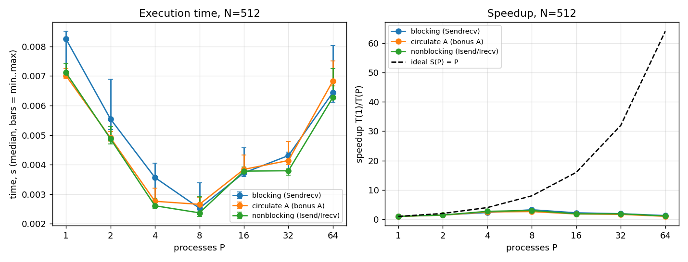
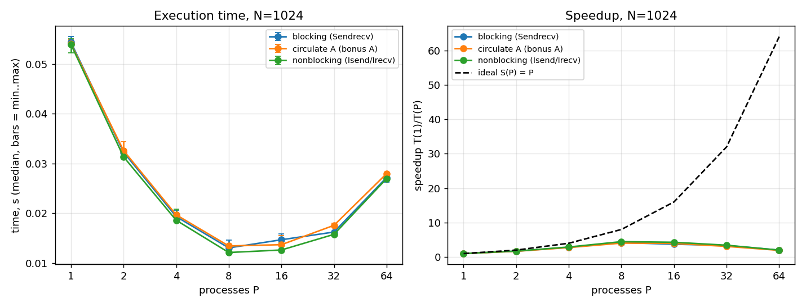
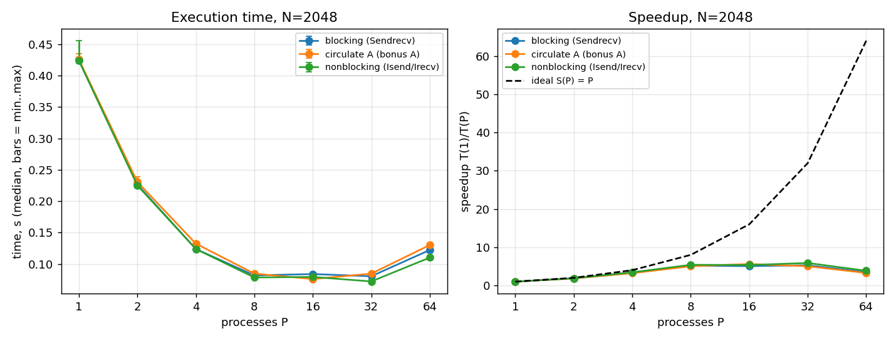
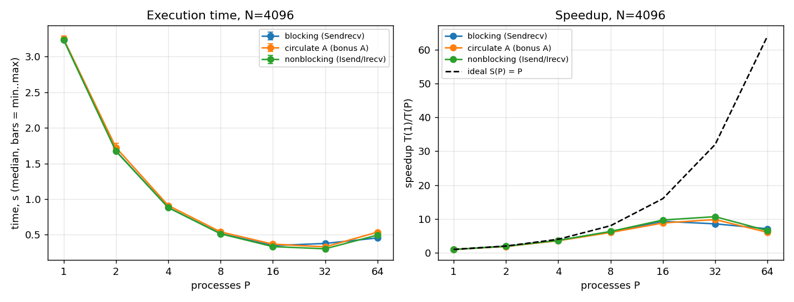
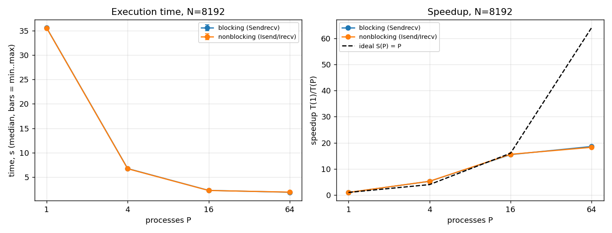
Left: execution time versus $P$ (median, bars = min..max). Right: speedup with the ideal $S(P) = P$ line.
Raw Terminal Output (laptop):
user@DESKTOP-AJAG7QD:/mnt/c/учёба/study/1_semester/parallel/hw7$ mpiexec -n 1 python3 task7_3.py --N 512 1024 2048 --runs 10 --methods blocking,nonblocking,circulate_A
blocking P= 1 N= 512 median 0.0074s (min 0.0063 / max 0.0101, 10 runs) 36.32 GFLOP/s setup 0.0054s
nonblocking P= 1 N= 512 median 0.0062s (min 0.0058 / max 0.0072, 10 runs) 43.44 GFLOP/s setup 0.0054s
circulate_A P= 1 N= 512 median 0.0064s (min 0.0057 / max 0.0085, 10 runs) 42.11 GFLOP/s setup 0.0054s
blocking P= 1 N= 1024 median 0.0543s (min 0.0448 / max 0.0749, 10 runs) 39.52 GFLOP/s setup 0.0321s
nonblocking P= 1 N= 1024 median 0.0487s (min 0.0449 / max 0.0529, 10 runs) 44.12 GFLOP/s setup 0.0321s
circulate_A P= 1 N= 1024 median 0.0489s (min 0.0464 / max 0.0633, 10 runs) 43.87 GFLOP/s setup 0.0321s
blocking P= 1 N= 2048 median 0.5390s (min 0.4606 / max 0.5911, 10 runs) 31.88 GFLOP/s setup 0.1929s
nonblocking P= 1 N= 2048 median 0.6404s (min 0.5962 / max 0.6825, 10 runs) 26.83 GFLOP/s setup 0.1929s
circulate_A P= 1 N= 2048 median 0.6177s (min 0.5767 / max 0.6939, 10 runs) 27.81 GFLOP/s setup 0.1929s
user@DESKTOP-AJAG7QD:/mnt/c/учёба/study/1_semester/parallel/hw7$ mpiexec -n 2 python3 task7_3.py --N 512 1024 2048 --runs 10 --methods blocking,nonblocking,circulate_A
blocking P= 2 N= 512 median 0.0075s (min 0.0058 / max 0.0093, 10 runs) 35.65 GFLOP/s setup 0.0069s
nonblocking P= 2 N= 512 median 0.0069s (min 0.0058 / max 0.0108, 10 runs) 38.76 GFLOP/s setup 0.0069s
circulate_A P= 2 N= 512 median 0.0072s (min 0.0060 / max 0.0112, 10 runs) 37.07 GFLOP/s setup 0.0069s
blocking P= 2 N= 1024 median 0.0627s (min 0.0517 / max 0.0750, 10 runs) 34.26 GFLOP/s setup 0.0343s
nonblocking P= 2 N= 1024 median 0.0734s (min 0.0610 / max 0.0885, 10 runs) 29.24 GFLOP/s setup 0.0343s
circulate_A P= 2 N= 1024 median 0.0618s (min 0.0559 / max 0.0715, 10 runs) 34.74 GFLOP/s setup 0.0343s
blocking P= 2 N= 2048 median 0.3275s (min 0.2964 / max 0.3916, 10 runs) 52.46 GFLOP/s setup 0.1693s
nonblocking P= 2 N= 2048 median 0.2935s (min 0.2572 / max 0.3702, 10 runs) 58.53 GFLOP/s setup 0.1693s
circulate_A P= 2 N= 2048 median 0.3320s (min 0.2877 / max 0.3762, 10 runs) 51.75 GFLOP/s setup 0.1693s
user@DESKTOP-AJAG7QD:/mnt/c/учёба/study/1_semester/parallel/hw7$ mpiexec -n 4 python3 task7_3.py --N 512 1024 2048 --runs 10 --methods blocking,nonblocking,circulate_A
blocking P= 4 N= 512 median 0.0050s (min 0.0048 / max 0.0062, 10 runs) 53.83 GFLOP/s setup 0.0047s
nonblocking P= 4 N= 512 median 0.0054s (min 0.0049 / max 0.0107, 10 runs) 50.03 GFLOP/s setup 0.0047s
circulate_A P= 4 N= 512 median 0.0056s (min 0.0054 / max 0.0102, 10 runs) 47.79 GFLOP/s setup 0.0047s
blocking P= 4 N= 1024 median 0.0724s (min 0.0525 / max 0.1144, 10 runs) 29.66 GFLOP/s setup 0.0303s
nonblocking P= 4 N= 1024 median 0.0608s (min 0.0554 / max 0.1527, 10 runs) 35.34 GFLOP/s setup 0.0303s
circulate_A P= 4 N= 1024 median 0.0650s (min 0.0576 / max 0.0892, 10 runs) 33.04 GFLOP/s setup 0.0303s
blocking P= 4 N= 2048 median 0.3957s (min 0.3244 / max 0.5190, 10 runs) 43.41 GFLOP/s setup 0.1447s
nonblocking P= 4 N= 2048 median 0.4299s (min 0.3670 / max 0.6408, 10 runs) 39.96 GFLOP/s setup 0.1447s
circulate_A P= 4 N= 2048 median 0.3003s (min 0.2767 / max 0.3731, 10 runs) 57.21 GFLOP/s setup 0.1447s| N | T(1) (s), blocking / nonblocking | S(2) | S(4) | E(4) |
|---|---|---|---|---|
| 512 | 0.0074 / 0.0062 | 0.98 / 0.89 | 1.48 / 1.15 | 37% / 29% |
| 1024 | 0.0543 / 0.0487 | 0.87 / 0.66 | 0.75 / 0.80 | 19% / 20% |
| 2048 | 0.5390 / 0.6404 | 1.65 / 2.18* | 1.36 / 1.49 | 34% / 37% |
* Superlinear only because of an unlucky $T(1)$: the nonblocking $P = 1$ median is 19% slower than the blocking one for the identical single multiplication. Against the blocking $T(1)$ it would be 1.84x.
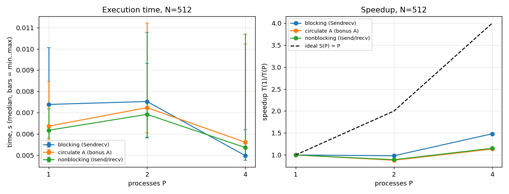
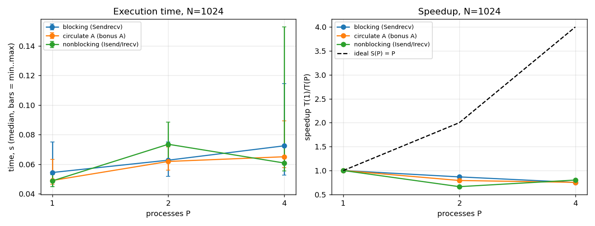
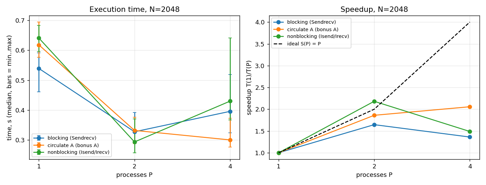
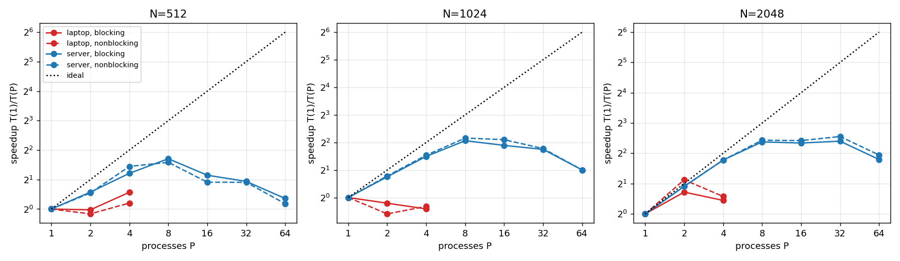
Speedup on both machines for the common sizes (log-log scale; red = laptop, blue = server, solid = blocking, dashed = nonblocking, dotted = ideal).
| N | Machine | T(1) blocking (s) | GFLOP/s, 1 rank | Best P | Best time (s) | Best speedup | Best GFLOP/s |
|---|---|---|---|---|---|---|---|
| 512 | laptop | 0.0074 | 36 | 4 | 0.0050 | 1.48 | 54 |
| 512 | server | 0.0082 | 33 | 8 | 0.0025 | 3.26 | 106 |
| 1024 | laptop | 0.0543 | 40 | 1 | 0.0543 | 1.00 | 40 |
| 1024 | server | 0.0544 | 40 | 8 | 0.0130 | 4.18 | 165 |
| 2048 | laptop | 0.5390 | 32 | 2 | 0.3275 | 1.65 | 52 |
| 2048 | server | 0.4247 | 40 | 32 | 0.0804 | 5.28 | 214 |
(Blocking version; the same table for both methods is in plots_compare/laptop_vs_server.csv.)
--bind-to core), and the machine was otherwise idle.Scatter calls), so it does not benefit from more cores on either machine.How does the ratio of computation to ring communication change with increasing $N$? Each process performs about $2N^3/P$ floating-point operations and sends about $(P-1)N^2/P$ elements, so the ratio is $$\frac{2N^3/P}{(P-1)N^2/P} = \frac{2N}{P-1}$$ operations per transferred element. It grows linearly with $N$ and shrinks as $P$ grows. For $N = 512$, $P = 64$ it is only 16 operations per element, which matches the collapse of the speedup there; for $N = 8192$, $P = 64$ it is 260, and the speedup keeps growing up to 64 ranks. This is exactly the pattern of the optimal $P$ described above: doubling $N$ allows roughly doubling $P$ at the same ratio.
What is the approximate smallest $N$ for which the parallel version is faster? Does the answer change with $P$? On the server the parallel version was already faster at the smallest tested size, $N = 512$, for every $P$ (1.13 to 3.26x), so the break-even point lies below 512 there; the benefit at $N = 512$ is large only for $P = 4$ to $8$. On the laptop it was reliably faster only from $N = 2048$; at $N = 512$ only $P = 4$ helped and at $N = 1024$ nothing did. The answer clearly depends on $P$: for a given $N$ adding ranks helps only up to an optimum, and because the ratio $2N/(P-1)$ falls with $P$, a larger $P$ needs a larger $N$ to be worthwhile.
How do the results compare with the matrix-vector multiplication of Assignment 6?
Design (task7_bonus_a.py, ring_matrix_multiplication_circulate_A): rank $p$ keeps its column block $B_p$ ($N \times n$) stationary and passes row blocks of $A$ around the same ring. At step $s$ it holds the row block that originally belonged to rank $owner = (p - s) \bmod P$, because every step moves blocks one rank to the right; the owner index is therefore computed from $p$ and $s$ exactly as $q$ in Exercise 7.1, and no extra metadata has to be sent. The product $A_{owner} B_p$ is the block $C_{owner,p}$, so each rank fills one column block of $C$ (shape $N \times n$), writing rows $owner \cdot n \ldots (owner+1) n - 1$.
Assembly: column blocks of $C$ are not contiguous in a C-order matrix, so a direct Gather into $C$ is impossible. Rank 0 gathers the $P$ contiguous $N \times n$ blocks into a $(P, N, n)$ array and rebuilds $C$ with blocks.transpose(1, 0, 2).reshape(N, N), i.e. element $(i, p n + j)$ of $C$ comes from block $p$, row $i$, column $j$.
Communication: identical in volume: an $n \times N$ block of $A$ has as many elements as an $N \times n$ block of $B$, the number of exchanges is $P - 1$, and the final gather moves the same $N^2$ elements. The only extra work is the reordering copy of the whole result on rank 0.
Performance: on the laptop it was within the noise of the other versions. On the server, where small differences can be measured, it is in most configurations 2 to 10% slower than the blocking version and up to 18% at $N = 4096$, $P = 64$ (0.537 s vs 0.456 s). This is consistent with the extra reordering copy of $N^2$ elements on rank 0 (128 MB for $N = 4096$), which is serial and therefore weighs more when the parallel part gets shorter. The exceptions are $N = 2048$, $P = 16$ (0.076 s vs 0.084 s) and $N = 4096$, $P = 32$ (0.331 s vs 0.378 s), where the blocking version itself had a slow point. Correctness: all tests passed on both machines.
Design (task7_bonus_b.py, ring_matrix_multiplication_rect): $A$ is $N \times K$, $B$ is $K \times M$, $C$ is $N \times M$.
Gather of row blocks builds the $N \times M$ result on rank 0.Correctness: non-square cases $N = 2P, K = 3, M = 3P$; $N = P, K = 7, M = 2P$; $N = 3P, K = 1, M = P$ (an outer product); $N = 5P, K = 40, M = 2P$, plus all square cases. All passed on the laptop ($P = 1, 2, 4$) and on the server ($P = 1, 2, 3, 4, 8, 16$).
Not implemented; this is a sketch of the two classical 2D algorithms. The $P$ processes form a $\sqrt{P} \times \sqrt{P}$ grid and process $(i, j)$ owns the blocks $A_{ij}$, $B_{ij}$ and computes $C_{ij}$, each of size $(N/\sqrt{P}) \times (N/\sqrt{P})$.
Difference in communication: in the 1D ring every process eventually receives the whole matrix $B$: about $(P-1)N^2/P \approx N^2$ elements, independent of $P$. In Cannon's algorithm each process receives $\sqrt{P}$ blocks of $A$ and $\sqrt{P}$ blocks of $B$ of size $N^2/P$, i.e. about $2N^2/\sqrt{P}$ elements, which falls with $P$, and each message only travels between direct neighbours in the grid. The server measurements show why this matters: the 1D ring stops scaling at 8 to 32 ranks for $N \le 4096$, partly because every rank still has to receive all of $B$. With $P = 64$ Cannon would reduce the data each rank receives from about $N^2$ to $N^2/4$, and the steps from 63 to 8. For $P = 4$, as on the laptop, $2N^2/\sqrt{P} = N^2$ gives no saving, and the extra skew and two sets of exchanges would only add overhead.
Gather, as required, but not the initial distribution.